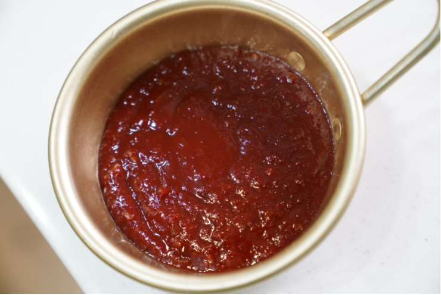

Korea Food

재료 리스트
목살 300g | 양파 1/2개 | 대파 1대 | 홍고추 1개 | 당근1/6개 | 식용유 | 통깨
양념( 고추장 2스푼 | 고춧가루 1.5 스푼 | 간장 1.5 스푼 | 설탕 1.5 스푼 | 다진마늘 1스푼| 사이다1.5 스푼 )
레시피
1. 양념장 만들기
고추장,설탕,고춧가루,다진마늘,간장,사이다를 넣어 잘 섞어 양념장을 만들어주세요
만들어진 양념장을 냉장고에 숙성시켜주세요.
2. 고기 양념에 재우기
핏물을 제거한 목살을 제육볶음 양념에 버무린 후 20분 이상 재워주세요.
3.채소 손질
대파,양파,당근,홍고추를 먹기 좋게 어슷썰기 썰어주세요.
달군 팬에 식용유를 두른 후 센 불에서 채소를 20초간 볶아주세요.
4. 조리
채소를 센불에서 볶다가 고기를 넣고 30초정도 더 볶아준 뒤 중불에서 약 4~5분 조리해주세요.
고기가 골고루 빠르게 익을 수 있기 때문에 채소를 센불에서 볶다가 고기를 나중에 볶아주세요.

제육 볶음 완성 !!